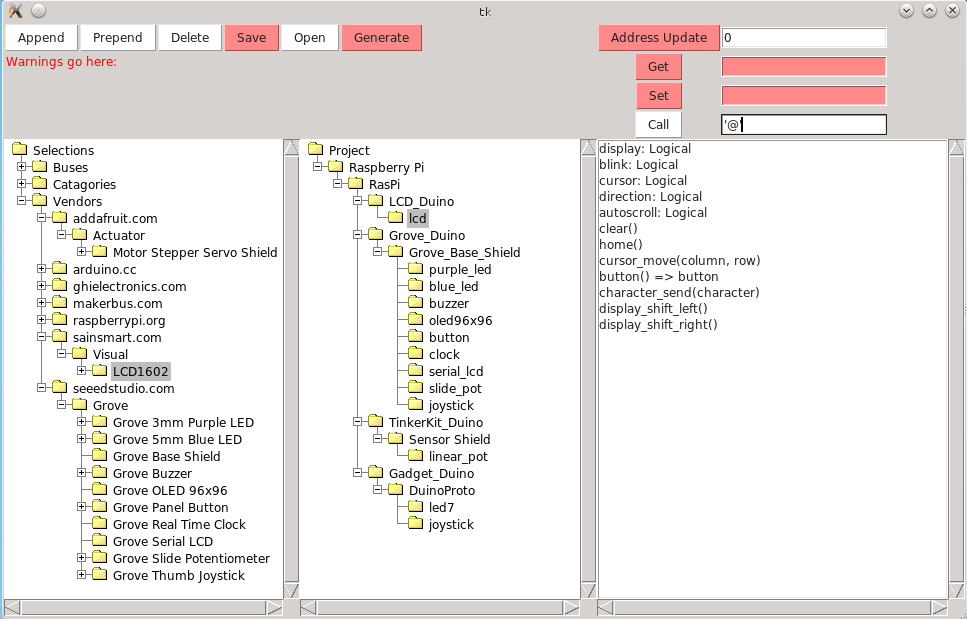

This is one of Wayne's many
electronics projects.
Configurator
Introduction
Configurator is a program that is used to configure
modules that make up an electronic project. At this
point in main window looks as follows:

The main window has three sub windows:
LI>
The left window is a "database" of available
modules. Currently modules can be selected by
Vendors, Categories, or by Buses. Currently,
the MBDuino module is selected.
-
The center window is the project window that
shows the project as nested tree of interconnected
modules. The project is hosted by Raspbery Pi
computer, that has a RasPi bridge that connectes
between the Raspberry Pi GPIO connector and a
MakerBus. There are 4 modules plugged into the
MakerBus -- LCD_Duino, Grove_Duino, TinkerKit_Duino,
and DemPer_Duino. All of the modules are
Arduino™ compatible board into which
shield can be plugged. The LCD_Duino has an
LCD shield plugged into it and the Grove_Duino
has a Grove shield plugged into it. All names
in the project tree are specified by the project
designer.
-
The right window is called the module window and
it allows the Configurator to perform remote
procedure calls and examine registers on the
selected module. The currently selected module
is highlighted in the middle window. The [Get],
[Set], and [Call] buttons are used to directly
access the module. Currently, the user has
just sent the letter 'H' to the LCD module via
the character_send() remote procedure
call.
That should provide enough of an overview for now.
The source code is available via
github.
The documentation is converted to Doxygen
format. Doxygen version 1.8 is required since
much of the documentation is done in
Markdown.
Copyright © 2012 by
Wayne C. Gramlich.